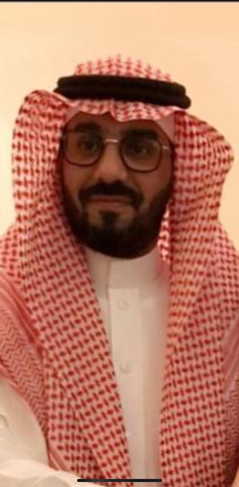

Waleed Ali Jari

Summary
Certified resourceful, Impact-oriented, motivated Agile Project management expert and digital transformation professional,
experienced in analyzing issues, and devising continuous process improvements while incorporating business process initiatives to increase efficiency,
streamline operations, and decrease aggregate expenses with limited resources. Capable of leading and building cohesive cross-functional teams & collaborating
with senior executives in improving project operations while overseeing staff and managing budgets.
Education
- Bachelor in Business Administration - Western Michigan University (April 2014)
Work experience
Digital Transformation Professional - stc
- Develop innovation strategy, methodology, and framework based on corporate strategy
- Lead Innovation Hub and Corporate Venture Builder Operations
- Support Idea Owner in preparing concept papers for prioritized opportunities
- Develop and manage a process of transforming ideas into prototypes with internal and external stakeholders
- Develops overall Group strategy, including vision, mission, strategic themes, goals, and objectives,
Digital Project Manager/ Deployment Manager - Banque Saudi Fransi (BSF)
- Prepare UAT and SIT environment for testing with relevant Business lines and stakeholders.
- Develop a Product deployment release roadmap with relevant Business lines
- Manage stakeholder's communication and release plan
- Develop and Manage Project Roadmap
- Drive project delivery by financial, development, and resource management
Skills
- Team Building & Leadership: 🚀
- Digital Development and Governance: 🚀
- Agile Environment & Agile Project management: 🚀
Awards and Certifications
- PMP, Certified 📃
- Prince 2 Agile, Certified 📃
- SCRUM Master, Certified 📃
- Product Owner, Certified 📃
Other